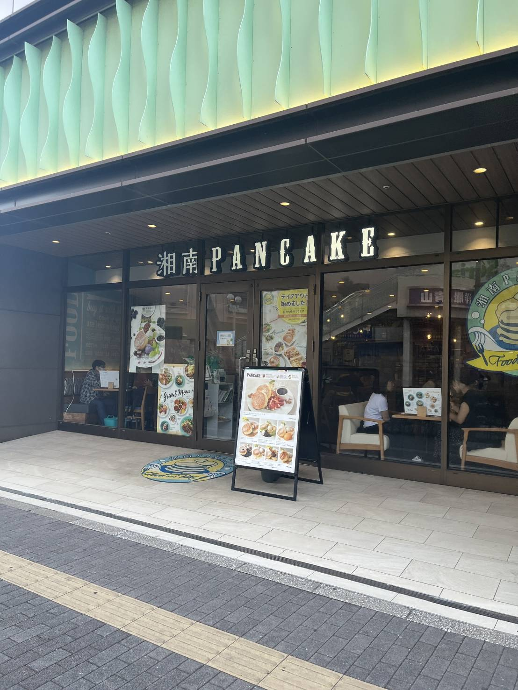
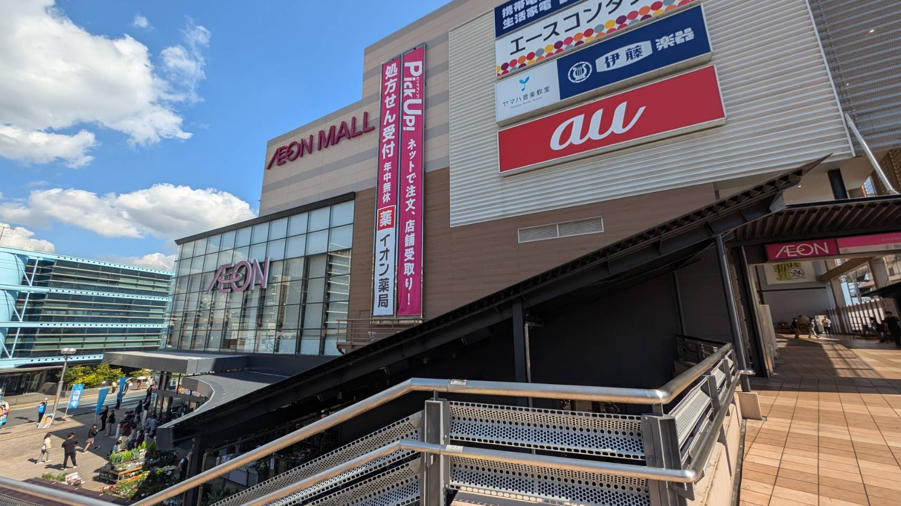
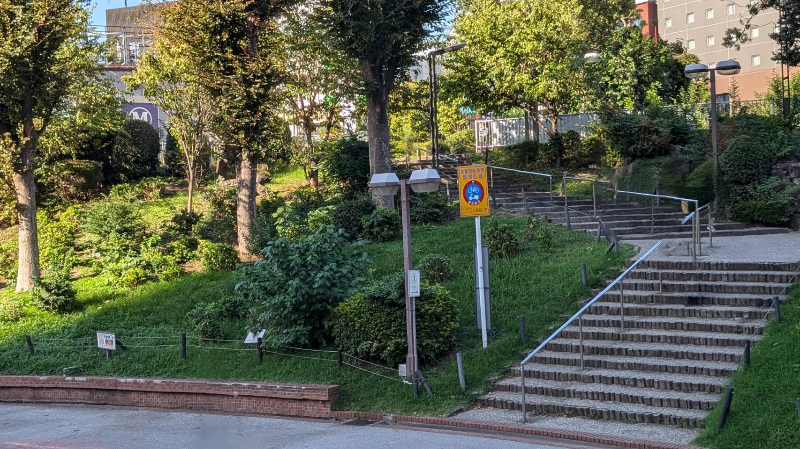

津田沼駅周辺でデートしたいけど、どこがいいのかわからないという方におすすめできる場所をいくつか紹介したいと思います。
1. 湖南パンケーキ Loharu 津田沼店
このお店では、湖南発祥のふわとろパンケーキや、こだわりの食材を使用したステーキなど、幅広いお食事を楽しむことができます。また、その季節限定の特別なパンケーキも提供されており、訪れるたびに新しい味に出会えます。
食事だけでなく、フォトジェニックな盛り付けも魅力のひとつで、SNS映えする写真を撮る楽しみもあります。
お店はJR津田沼駅から徒歩2分の便利な場所にあり、車で来店の場合は駐車場も利用可能です。（館内で1,000円以上のお買い物をすると、2時間まで無料で駐車できます。）
営業時間：
【月～金 10:00～22:00（LO 21:15、ドリンク 21:30）】
【土 9:00～22:00（LO 21:15、ドリンク 21:30）】
【日祝 9:00～21:00（LO 20:15、ドリンク 20:30）】

2. イオンモール津田沼
津田沼駅から少し歩いた場所にある大型ショッピングモールです。ショッピングや食事を一度に楽しむことができるため、デートで一日中過ごすのにぴったりの場所です。
フードコートも充実しており、ショッピングの合間に軽食を楽しんだり、お互いの好みに合わせてさまざまな料理を味わうことができます。
ゲームセンターも併設されているので、食事や買い物の後もデートの時間を満喫することができます。また、季節ごとに変わるイベントやセールも魅力的で、訪れるたびに新しい楽しみが待っています。
営業時間：
イオンモール専門店:
1F・2F・3F イオンモール専門店街・フードガーデン 10:00～21:00（お店によって時間が異なる場合があります。）
3F レストラン街 11:00～22:00
イオン津田沼店:
1F・2F・3F ホームファッション・その他売場 9:00～22:00（1F 調剤薬局は9:00～22:00）
1F 食料品売場 24時間営業

3. 津田沼公園
津田沼の中心に位置し、駅から徒歩数分の便利な場所にある小さな公園です。デートの途中に立ち寄るのにも最適で、のんびり過ごしたい時やテイクアウトした食べ物を持ち寄ってピクニック気分を楽しむことができます。
都会の中にありながら、緑に囲まれた癒しの空間で、リラックスしながら二人で特別な時間を過ごせます。
また、商工会議所が主催するイベントが時折開催されており、さらに楽しみが広がります。四季折々の自然を感じることができ、冬にはイルミネーションも点灯され、デートスポットとしてもおすすめです。
